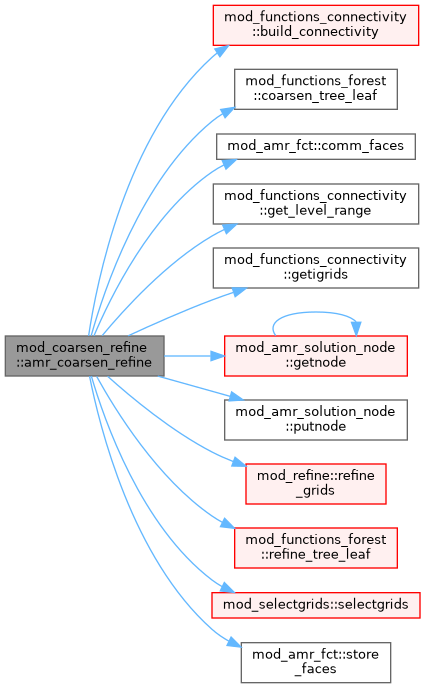
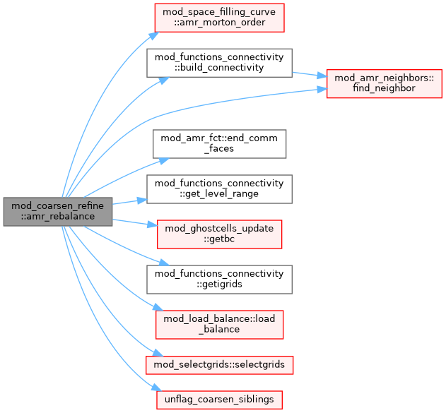

|
MPI-AMRVAC 3.2
The MPI - Adaptive Mesh Refinement - Versatile Advection Code (development version)
|
Module to coarsen and refine grids for AMR. More...
Functions/Subroutines | |
| subroutine, public | amr_coarsen_refine |
| coarsen and refine blocks to update AMR grid | |
| subroutine, public | amr_rebalance |
| Cost-weighted rebalance without refine/coarsen. For static/uniform grids (refine_max_level=1) amr_coarsen_refine never runs, so the cost-weighted load_balance has no invocation point and the partition stays at the initial equal-block (cell-count) split -> photosphere EoS-heavy ranks stall the rest. This migrates blocks to equalise the measured per-block cost (block_cost, populated when lb_automatic is on) then rebuilds connectivity + ghosts, mirroring the tail of amr_coarsen_refine. | |
Module to coarsen and refine grids for AMR.
| subroutine, public mod_coarsen_refine::amr_coarsen_refine |
coarsen and refine blocks to update AMR grid
Definition at line 21 of file mod_coarsen_refine.t.

| subroutine, public mod_coarsen_refine::amr_rebalance |
Cost-weighted rebalance without refine/coarsen. For static/uniform grids (refine_max_level=1) amr_coarsen_refine never runs, so the cost-weighted load_balance has no invocation point and the partition stays at the initial equal-block (cell-count) split -> photosphere EoS-heavy ranks stall the rest. This migrates blocks to equalise the measured per-block cost (block_cost, populated when lb_automatic is on) then rebuilds connectivity + ghosts, mirroring the tail of amr_coarsen_refine.
Definition at line 186 of file mod_coarsen_refine.t.
